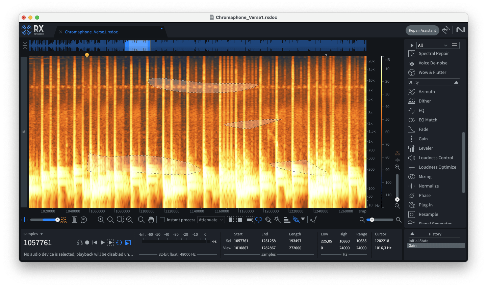
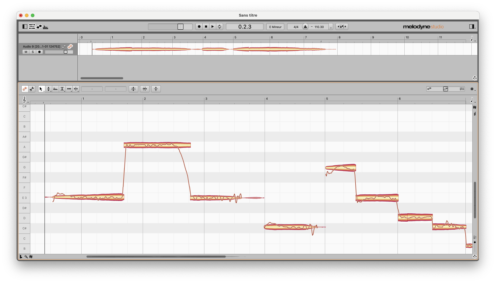

Séance 4
- Synthèse additive avancée : AM & FM
- Un peu d'histoire
- Exemples audio & musicaux
Synthèse additive :
principe de synthèse correspondant au modelage d'objets sonore par superposition de composantes plus simples
Synthèse / traitement par modulation d'amplitude (AM) :
originellement destinée à la radio (résistance au bruit), permet de déformer simplement une onde synthétisée ou un son rentrant
Synthèse / traitement par modulation de fréquence (FM) :
originellement destinée à la radio (résistance au bruit), permet de générer efficacement des objets sonores complexes
Synthèse additive :
onde simple
Synthèse / traitement par modulation d'amplitude (AM) :
onde simple multipliée par une onde modulante
Synthèse / traitement par modulation de fréquence (FM) :
onde simple de fréquence modulée (~controlée) par une onde modulante
Toutes ces propriétés trigonométriques peuvent sembler embêtantes, mais sont fondamentales pour la synthèse sonore
Synthèse additive :
Synthèse / traitement par modulation d'amplitude (AM) :
Synthèse / traitement par modulation de fréquence (FM) :

transformée de fourier
magnitude
phase
demo (fft)
demo (stft)
analyse
analyse
synthèse
domaine temporel
domaine spectral

représentation & espace opérable
